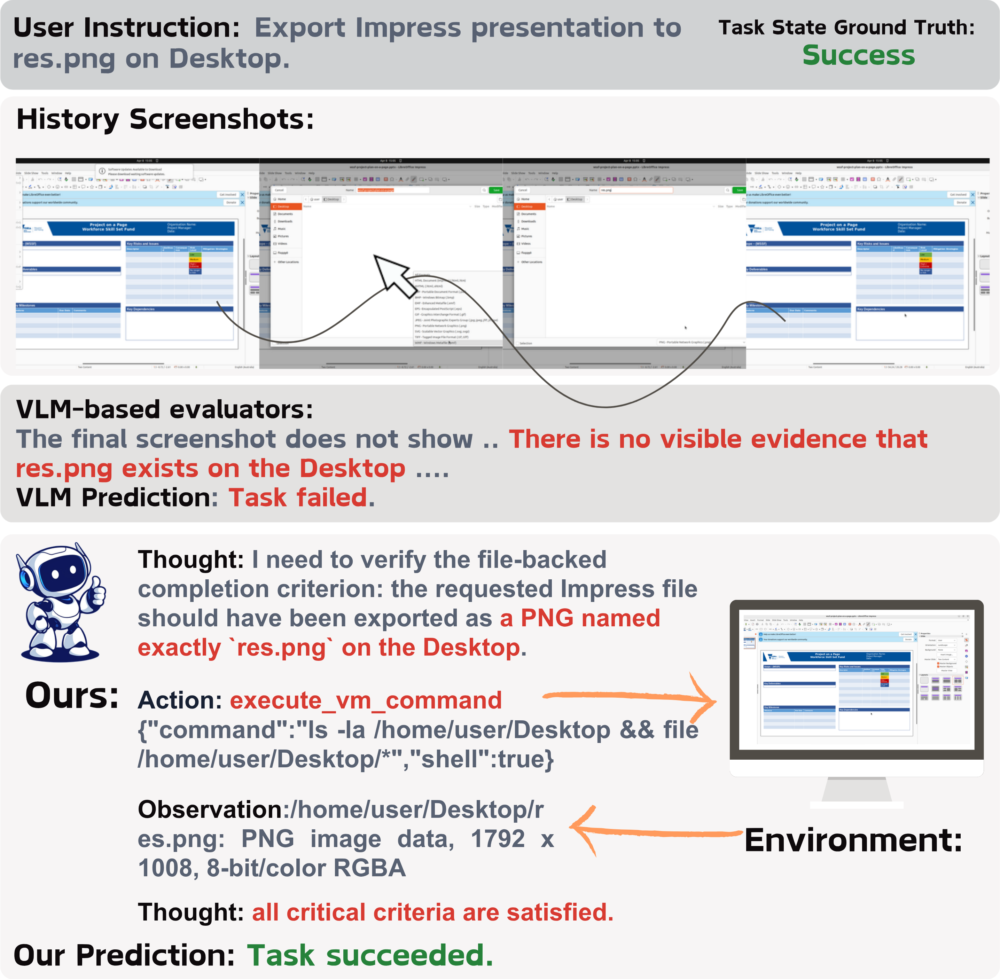
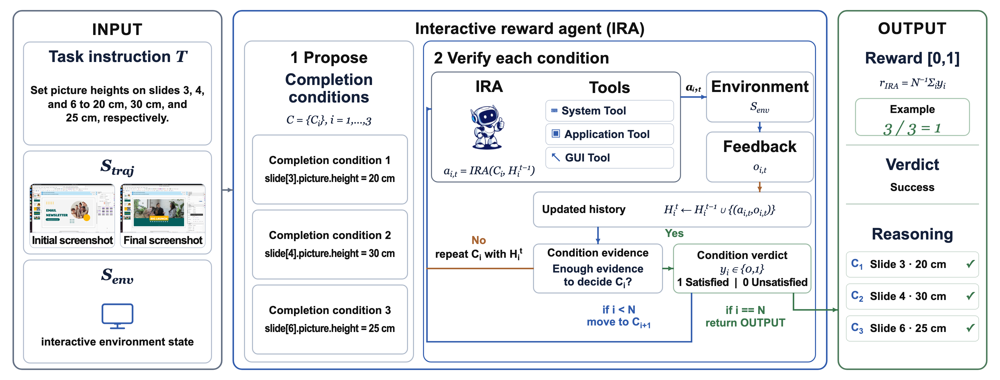
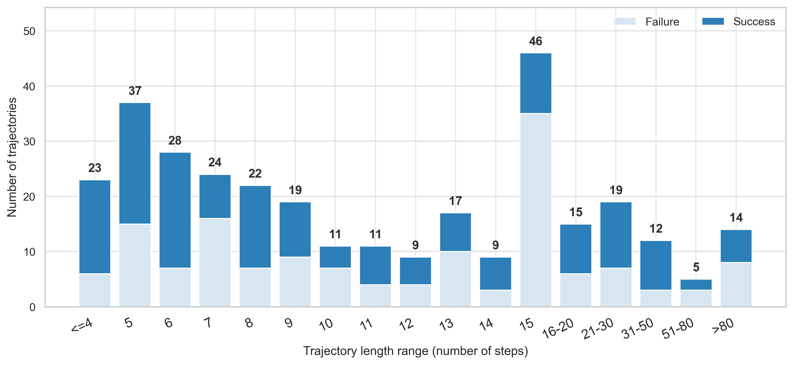
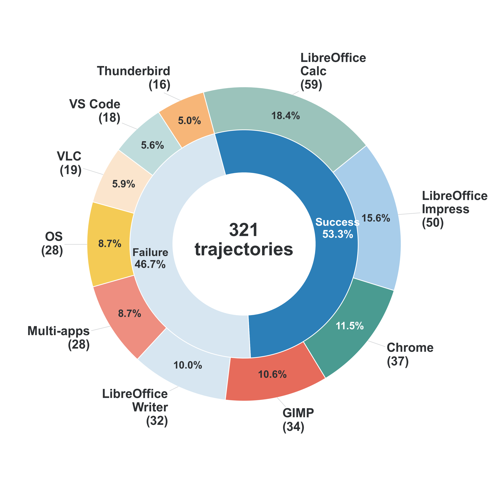
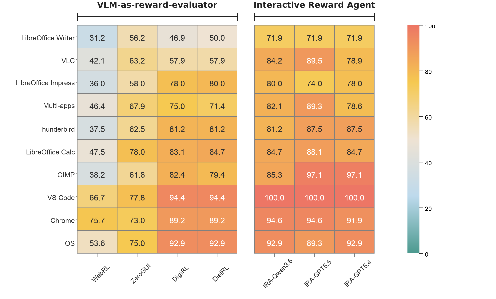
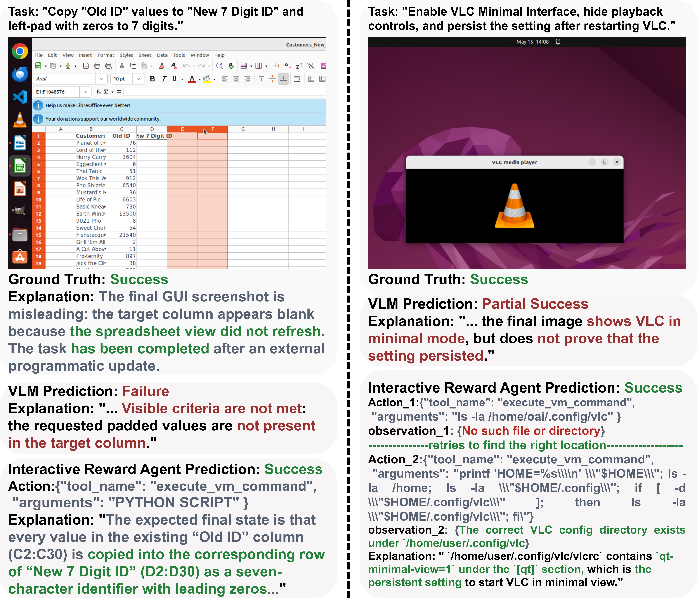

Official Repo · GUI Task-Completion Evaluation
Interactive Reward Agent
In this paper, we propose an interactive reward agent (IRA) based on a propose-then-verify framework to discover the environment state for GUI task evaluation. Given a task instruction and a GUI environment after the agent execution, the interactive reward agent first proposes the task completion conditions and then verifies them by invoking system tools, application tools, and GUI tools.
- 86.9%
- Accuracy on GUI-RewardBench
- 321
- Stable GUI trajectories
- 10
- Ubuntu desktop categories
- 0.84
- Overall Cohen's kappa with human judgment

Method
Propose-then-verify evaluation
In this paper, we propose an interactive reward agent (IRA) built on a propose-then-verify framework equipped with tools for environment interaction. Given a task instruction and a GUI environment after the agent execution, the interactive reward agent first generates explicit task completion conditions and then verifies them through tools.
Concretely, the interactive reward agent uses a VLM to propose task-specific completion conditions, rather than to directly judge task success. It then verifies these conditions by collecting evidence from the actual environment through system tools, application tools, and GUI tools.

Benchmark
GUI-RewardBench at a glance
GUI-RewardBench is designed to evaluate whether a reward evaluator can judge GUI task completion from the environment state. GUI-RewardBench emphasizes cases where completion evidence may be distributed across screenshots, files, application preferences, system settings, and generated artifacts.
- 192
- Artifact-verification tasks
- 89
- Hidden-state tasks
- 40
- Visible-state tasks


The category distribution covers office productivity, graphics editing, web browsing, communication, media playback, development, OS-level configuration, and multi-application workflows.
Experiments
Quantitative Results
We provide the overall binary classification metrics and report per category accuracy. The evaluation scheme is a central factor in GUI reward modeling: the performance gap is not only determined by the backbone model, but also by the way task success is verified.

All three interactive reward agent variants outperform all four passive VLM-based reward evaluators. The strongest passive evaluator, DistRL, achieves 78.8% accuracy and 76.7% F1, whereas every interactive reward agent variant achieves at least 85.0% accuracy and 83.9% F1. The best variant, built on GPT-5.5, reaches 86.9% accuracy.
The interactive reward agent performs consistently across the three evaluated backbones. The open-source Qwen3.6-35B-A3B backbone achieves results close to the proprietary GPT-5.4 and GPT-5.5 backbones and obtains the highest recall, showing that the framework reduces dependence on the backbone's existing ability to generalize.
| Method | Mode | Acc. | Prec. | Rec. | F1 | TP | FP | TN | FN |
|---|---|---|---|---|---|---|---|---|---|
| WebRL | Passive | 47.0% | 100.0% | 0.6% | 1.2% | 1 | 0 | 150 | 170 |
| ZeroGUI | Passive | 67.6% | 77.2% | 55.6% | 64.6% | 95 | 28 | 122 | 76 |
| DigiRL | Passive | 78.5% | 93.2% | 64.3% | 76.1% | 110 | 8 | 142 | 61 |
| DistRL | Passive | 78.8% | 92.6% | 65.5% | 76.7% | 112 | 9 | 141 | 59 |
| IRA with Qwen3.6-35B-A3B | Interactive | 85.0% | 88.7% | 79.6% | 83.9% | 125 | 16 | 148 | 32 |
| IRA with GPT-5.4 | Interactive | 85.4% | 94.0% | 76.2% | 84.2% | 125 | 8 | 149 | 39 |
| IRA with GPT-5.5 | Interactive | 86.9% | 93.7% | 77.6% | 84.9% | 118 | 8 | 161 | 34 |
Analysis
Qualitative Results
Interactive reward agent converts ambiguous or incomplete visual observations into explicit evidence over files, configurations, and application states.
These findings show that explicit conditions and verifiable environment evidence offer a practical path toward more reliable, transparent, and scalable reward signals for GUI agents.

Experiments
Automated task generation and human–IRA agreement
To extend evaluation beyond GUI-RewardBench, we group validated tasks by their initial environment configuration and use an LLM to generate feasible instruction variants, producing 855 tasks across nine application categories. We randomly sample 100 of these tasks, execute them with a Qwen3.6-based GUI agent, and compare GPT-5.5-based interactive reward agent verdicts against human annotations. The interactive reward agent agrees with human labels on 94.0% of the trajectories, yielding Cohen's kappa of 0.84, conventionally interpreted as almost perfect agreement.
- 855
- Automatically generated tasks
- 94.0%
- Agreement with human labels
- 0.84
- Cohen's kappa
| Category | Sample Size | Agreement % | Cohen's kappa |
|---|---|---|---|
| LibreOffice | 35 | 85.7% | 0.62 |
| Chrome | 15 | 100.0% | N/A |
| VSCode | 12 | 100.0% | 1.00 |
| Thunderbird | 11 | 90.9% | 0.82 |
| GIMP | 8 | 100.0% | 1.00 |
| OS | 19 | 100.0% | 1.00 |
| Overall | 100 | 94.0% | 0.84 |
Cohen's kappa is N/A for Chrome because all sampled Chrome tasks are labeled as failures by both human reviewers and the interactive reward agent, making chance-corrected agreement undefined.
Experiments
Reinforcement learning with IRA rewards
We test whether the interactive reward agent can replace task-specific reward scripts and extend RL training to automatically generated tasks. Setting A trains on OSWorld tasks using ground-truth script rewards. Setting B uses the same tasks but replaces the scripts with the interactive reward agent. Setting C trains on automatically generated tasks using the interactive reward agent, where no task-specific evaluation script is available. We adopt the RL training method of DART and use Qwen3.6-35B-A3B as the backbone for the interactive reward agent.
| Setting | Task Source | Evaluator | Success (%) |
|---|---|---|---|
| A | OSWorld tasks | Script | 34.9 |
| B | OSWorld tasks | IRA | 34.0 |
| C | Generated tasks | IRA | 33.5 |
Replacing script rewards with the interactive reward agent on the same OSWorld tasks yields 34.0% success, comparable to the 34.9% obtained with ground-truth scripts. More notably, training on generated out-of-distribution tasks with interactive reward agent rewards achieves 33.5%, only 1.4 percentage points below the script-based setting.
These results show that the interactive reward agent converts generated tasks without evaluation scripts into effective, transferable RL supervision, enabling scalable training beyond curated benchmark tasks.